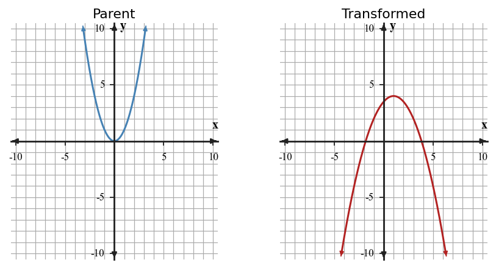
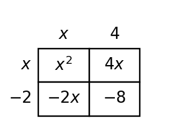
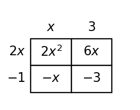

4-S1-DOK1.01
A table has equal first differences when inputs increase by $1$. Name the most likely family and the evidence that supports it.
Learning Target: Students will identify common function families from graphs, equations, tables, and contexts.
A table has equal first differences when inputs increase by $1$. Name the most likely family and the evidence that supports it.
A table has first differences that are not constant, but second differences are constant. Name the most likely family and the evidence.
A table multiplies by $3$ each time the input increases by $1$. Name the most likely family and the evidence.
An equation has the form $y=m x+b$ with $m\ne 0$. Name the family and one graph feature to expect.
An equation has the form $y=a(x-h)^2+k$ with $a\ne 0$. Name the family and the key point shown by the form.
An equation has the form $y=a|x-h|+k$ with $a\ne 0$. Name the family and the key point shown by the form.
A context describes a fee that starts at a fixed amount and then grows by the same amount each day. Name the likely family.
A context describes a population that is multiplied by the same factor each year. Name the likely family.
A graph is symmetric around a vertical line and has a lowest point. Name two possible families that could fit and one extra piece of evidence needed.
A graph has a V-shaped turning point. Name the family and the vocabulary word for that point.
A graph is a straight line with negative slope. Name the family and describe the direction of change.
A table begins $2, 5, 10, 17, 26$ for consecutive inputs. Identify the repeated pattern that supports a family choice.
Classify the family for the table and state the rate, difference, or ratio that supports your choice.
| $x$ | 0 | 1 | 2 | 3 |
|---|---|---|---|---|
| $y$ | 4 | 7 | 10 | 13 |
Classify the family for the table and explain what happens to first and second differences.
| $x$ | 0 | 1 | 2 | 3 |
|---|---|---|---|---|
| $y$ | 1 | 4 | 9 | 16 |
Classify the family for the table and state the common ratio.
| $x$ | 0 | 1 | 2 | 3 |
|---|---|---|---|---|
| $y$ | 3 | 6 | 12 | 24 |
Classify the family for the table and describe its symmetry evidence.
| $x$ | -2 | -1 | 0 | 1 | 2 |
|---|---|---|---|---|---|
| $y$ | 5 | 2 | 1 | 2 | 5 |
The equation $y=2(1.5)^x$ and a context about repeated percent growth are paired. Build a four-value table and explain why the equation and context support the same family.
Use the graph set and the evidence cards below. Match each evidence card to a graph, then identify the family. For each match, cite the evidence you used; do not use graph shape alone.
| Evidence card | Given evidence |
|---|---|
| 1 | For equal input steps, the outputs change by the same amount each time. |
| 2 | Outputs mirror across one input value and have constant second differences. |
| 3 | Outputs decrease to a single turning point and then increase at a constant rate away from that point. |
| 4 | After accounting for a vertical shift, equal input steps multiply the output pattern by a common factor. |

A student says both relationships in the figure are linear because they both increase. Estimate the outputs at three equally spaced $x$-values for each graph, compare the first differences, and identify one feature that separates the families.

A ball is dropped and its height values for equal time steps are $96, 72, 48, 24, 0$. Build the difference pattern, choose a likely family for this interval, and explain why the model should stop at the last value.
A bank account starts at 500 dollars and earns 4 percent interest each year. Write the multiplier, build a three-year table, and explain how the repeated percent change supports the family.
An expression is written $f(x)=(x-4)^2+7$. Use the form to identify the family, build three symmetric points around the key point, and explain how those points confirm the graph feature made easiest by the form.
A student claims the table below is exponential because the outputs get larger faster than before. Critique the claim using differences or ratios, then state a better family choice.
| $x$ | 0 | 1 | 2 | 3 | 4 |
|---|---|---|---|---|---|
| $y$ | 2 | 5 | 10 | 17 | 26 |
The equation $y=3x+2$ and the table are meant to represent the same relationship. Find the first mismatch, explain how you know, and revise the incorrect value.
| $x$ | 0 | 1 | 2 | 3 |
|---|---|---|---|---|
| $3x+2$ | 2 | 5 | 9 | 11 |
Two students classify a relationship. Student A uses the equation $y=(x-1)^2+4$. Student B uses the table below. Explain two different methods that should lead to the same family classification.
| $x$ | 0 | 1 | 2 | 3 |
|---|---|---|---|---|
| $y$ | 5 | 4 | 5 | 8 |
A context describes a bouncing ball whose maximum heights are multiplied by about $0.6$ after each bounce. Compare what evidence a table, graph, and equation would each show if the relationship were exponential decay.
Design a four-representation model for a quadratic with vertex $(2,-3)$ and $y$-intercept $5$: a short context, a four-row table, an equation, and a description of the graph. Make sure each representation gives evidence for the same family.
Performance notes: Evaluate whether the family evidence is consistent across representations and whether the justification uses more than graph shape.
A teammate created this mixed model: the context says a phone tree doubles each round, the table gives outputs $4,7,10,13$ for rounds $0,1,2,3$, and the equation is $y=(x-1)^2+2$. Revise the model so all three representations support one family, and explain what you changed.
Performance notes: Evaluate whether the family evidence is consistent across representations and whether the justification uses more than graph shape.
Create a data set for inputs $-2,-1,0,1,2$ that could be confused at first glance. It must include one repeated output and a nonconstant first-difference pattern. Then add enough evidence to prove whether it is linear, quadratic, exponential, or absolute value.
Performance notes: Evaluate whether the family evidence is consistent across representations and whether the justification uses more than graph shape.
A petri dish has 6 bacteria at hour 0 and doubles each hour. The equation is $y=6(2)^x$, and the table gives $(0,6),(1,12),(2,24),(3,48)$. Write the missing graph description that would make the family choice unmistakable.
Performance notes: Evaluate whether the family evidence is consistent across representations and whether the justification uses more than graph shape.
A student sees a curved graph and chooses quadratic, but the table gives $(0,3),(1,6),(2,12),(3,24)$. Revise the family choice and explain why the revised family is stronger.
Performance notes: Evaluate whether the family evidence is consistent across representations and whether the justification uses more than graph shape.
Create a context and equation for a non-linear family with starting value $12$ when $x=0$ and output greater than $30$ by $x=4$. Include a short note explaining how the context limits the useful domain.
Performance notes: Evaluate whether the family evidence is consistent across representations and whether the justification uses more than graph shape.
Learning Target: Students will graph and write translated functions using key points and key features.
For $g(x)=f(x)+5$, describe the translation from $f$ to $g$.
For $g(x)=f(x-4)$, describe the translation from $f$ to $g$.
For $g(x)=f(x+3)-2$, describe the horizontal and vertical translations.
The parent vertex $(0,0)$ moves to $(5,-1)$. Write the translation in words.
The point $(2,4)$ on $f$ moves to $(2,9)$ on $g$. What vertical translation occurred?
The point $(-1,1)$ on $f$ moves to $(3,1)$ on $g$. What horizontal translation occurred?
In $y=|x-6|+2$, identify the translated vertex.
In $y=(x+4)^2-7$, identify the translated vertex.
A graph of $y=x^2$ is shifted down $3$ units. Write the new equation.
A graph of $y=|x|$ is shifted left $2$ units. Write the new equation.
A table for $f$ has output $8$ when $x=1$. What output would $g(x)=f(x)-6$ have when $x=1$?
A graph is translated right $5$ and up $4$. Describe how the key point $(0,0)$ moves.
Use the blank coordinate plane to graph $g(x)=|x-2|+3$. Mark the translated vertex and two symmetric points.

Use the blank coordinate plane to graph $h(x)=(x+1)^2-4$. Mark the translated vertex and at least two matching points.
Compare the parent graph and translated graph. Write the translation in words and identify the translated vertex.

Compare the parent graph and translated graph. Write an equation for the translated quadratic and explain how the vertex moved.

Use the table to decide whether $g$ is a vertical translation of $f$. If so, name the shift.
| $x$ | -1 | 0 | 1 | 2 |
|---|---|---|---|---|
| $f(x)$ | 1 | 0 | 1 | 4 |
| $g(x)$ | 4 | 3 | 4 | 7 |
Use the table to decide whether $h$ is a horizontal translation of $f$. Explain how the input pattern shifted.
| $x$ | -2 | -1 | 0 | 1 |
|---|---|---|---|---|
| $f(x)$ | 4 | 1 | 0 | 1 |
| $h(x)$ | 1 | 0 | 1 | 4 |
The table comes from a translated quadratic. Identify the vertex and write a possible equation.
| $x$ | -3 | -2 | -1 | 0 | 1 |
|---|---|---|---|---|---|
| $y$ | 0 | 1 | 4 | 9 | 16 |
Write an equation for a translation of $y=|x|$ with vertex $(-4,6)$. Then explain how the equation shows the move.
Write an equation for a translation of $y=x^2$ whose vertex is $(3,-5)$. Then give two points that should appear on the graph.
A function model must have the same shape as $y=|x|$ but its minimum value must be $2$ when $x=-7$. Write the translated equation and state the vertex.
A classmate says $y=(x-4)^2+6$ moves $y=x^2$ left $4$ and up $6$ because the equation contains $x-4$. Explain why that translation is not reasonable and give the correct movement.
You need to write a translated absolute value function with vertex $(2,-5)$. Construct a strategy that starts from key points instead of memorizing a rule, then use it to write the equation.
Analyze the structure of $y=(x+3)^2-1$ and $y=x^2+6x+8$. Decide whether they represent the same translated quadratic and justify your answer without graphing.
A student graphs $y=|x+2|-4$ with vertex $(2,-4)$. Critique the error using the equation structure and describe how the graph should be revised.
Create a translated absolute value function that has vertex $(3, -2)$ and passes through a point with output $5$. Include the equation, two supporting points, and a short context where the vertex has meaning.
Performance notes: Evaluate alignment among vertex, equation parameters, table values, and context meaning.
Design a short context that can be modeled by a translated quadratic with vertex $(-1, 4)$. State what the vertex means and give a table with four values.
Performance notes: Evaluate alignment among vertex, equation parameters, table values, and context meaning.
A translated graph and equation disagree: the graph has vertex $(4,1)$, but the equation is $y=(x+1)^2+4$. Revise one representation and justify your revision.
Performance notes: Evaluate alignment among vertex, equation parameters, table values, and context meaning.
Create two different translated functions from the parent $y=|x|$ that both pass through $(0,4)$ but have different vertices. Explain why both can pass through the shared point.
Performance notes: Evaluate alignment among vertex, equation parameters, table values, and context meaning.
Design a translated absolute value equation for a distance-from-target situation where the target value is $8$ units and the minimum output is $0$. Include a table and explain how the horizontal shift represents the target value.
Performance notes: Evaluate alignment among vertex, equation parameters, table values, and context meaning.
Synthesize a graph description, equation, and table for a translated quadratic with minimum at $(2,-3)$ and $y$-intercept $1$. Explain how each representation shows the minimum.
Performance notes: Evaluate alignment among vertex, equation parameters, table values, and context meaning.
Learning Target: Students will analyze and graph transformations involving stretches, compressions, and reflections.
In $g(x)=3f(x)$, name the transformation from $f$ to $g$.
In $g(x)=\frac{1}{2} f(x)$, name the transformation from $f$ to $g$.
In $g(x)=-f(x)$, name the reflection and describe the output change.
In $y=-2|x|$, identify the reflection and stretch.
In $y=\frac{1}{3} x^2$, identify whether the graph is wider or narrower than $y=x^2$.
In $y=-x^2+4$, identify the reflection and vertical translation.
If $(2,4)$ is on $f$, what point is on $g(x)=2f(x)$?
If $(-3,5)$ is on $f$, what point is on $g(x)=-f(x)$?
If $(1,-6)$ is on $f$, what point is on $g(x)=\frac{1}{2} f(x)$?
Name the parameter that controls vertical stretch in $y=a(x-h)^2+k$.
Name the parameter that controls vertical shift in $y=a|x-h|+k$.
Name two transformations shown by $y=-\frac{1}{2}(x+4)^2-3$.
Use the blank coordinate plane to graph $y=-2|x+1|+3$. Plot the vertex and at least four transformed key points.

Use the blank coordinate plane to graph $y=-\frac{1}{2}(x-2)^2+4$. Plot the vertex and at least four transformed key points.
Compare the parent and transformed quadratic. List the reflection, vertical scale factor, and translation shown.

Compare the parent and transformed absolute value graph. Identify the reflection, stretch, and translation.

Use the table to identify the vertical scale factor from $f$ to $g$.
| $x$ | -2 | -1 | 0 | 1 | 2 |
|---|---|---|---|---|---|
| $f(x)$ | 4 | 1 | 0 | 1 | 4 |
| $g(x)$ | 8 | 2 | 0 | 2 | 8 |
Use the table to identify the reflection and stretch from $f$ to $h$.
| $x$ | -2 | -1 | 0 | 1 | 2 |
|---|---|---|---|---|---|
| $f(x)$ | 2 | 1 | 0 | 1 | 2 |
| $h(x)$ | -4 | -2 | 0 | -2 | -4 |
Decide whether this transformed quadratic opens up or down, then identify a likely vertex.
| $x$ | -1 | 0 | 1 | 2 | 3 |
|---|---|---|---|---|---|
| $y$ | -5 | -1 | 1 | 1 | -1 |
Write a transformed absolute value equation with vertex $(1,4)$, reflected over the $x$-axis, and vertically stretched by factor $3$.
Write a transformed quadratic equation with vertex $(-2,5)$ that opens down and is vertically compressed by factor $\frac{1}{2}$.
Apply the transformation $g(x)=-2f(x)+1$ to the points $(-1,2)$, $(0,0)$, and $(1,2)$. List the transformed points.
The equation $y=-2|x+1|+3$ and the table are meant to match. Find the first mismatch, justify it with substitution, and revise the incorrect output.
| $x$ | -2 | -1 | 0 | 1 |
|---|---|---|---|---|
| $y$ | 1 | 3 | 1 | -2 |
Two students graph $y=-\frac{1}{2}(x-2)^2+4$. One transforms the vertex first; the other transforms a table of parent points first. Explain both methods and why they should produce the same graph.
A student predicts that $y=4(x-1)^2-2$ is wider than $y=x^2$ because it is multiplied by $4$. Make a reasonableness argument to support or reject the prediction.
Construct an efficient strategy for determining whether $y=-3|x+2|+1$ and the table below represent the same function without graphing every point.
| $x$ | -4 | -2 | 0 | 1 |
|---|---|---|---|---|
| $y$ | -5 | 1 | -5 | -8 |
Synthesize an equation, key-point table, and graph description for a function made from $y=|x|$ by reflecting over the $x$-axis, stretching vertically by factor $2$, and translating right $1$ and up $3$. Explain how each representation shows every transformation.
Performance notes: Look for correct parameter reasoning, transformed key points, and a clear explanation of why the chosen representation is useful.
Two possible models fit a V-shaped context: $A(x)=2|x-3|+1$ and $B(x)=\frac{1}{2}|x-3|+1$. Recommend one for a situation where output grows quickly away from the target, and justify with table evidence.
Performance notes: Look for correct parameter reasoning, transformed key points, and a clear explanation of why the chosen representation is useful.
A graph has the right vertex but is too narrow and opens the wrong direction. Revise the equation $y=3(x+2)^2-1$ so it opens down and is wider while keeping the same vertex.
Performance notes: Look for correct parameter reasoning, transformed key points, and a clear explanation of why the chosen representation is useful.
Create a transformed quadratic that passes through $(0,0)$ and has vertex $(2,-4)$. Show how the point condition helps determine the vertical scale.
Performance notes: Look for correct parameter reasoning, transformed key points, and a clear explanation of why the chosen representation is useful.
Recommend whether a table or equation is more efficient for checking the transformations in $y=-\frac{1}{3}|x-5|+2$. Support your recommendation.
Performance notes: Look for correct parameter reasoning, transformed key points, and a clear explanation of why the chosen representation is useful.
Create a transformed absolute value model for a scoring penalty with ideal value $7$, no penalty at the ideal value, and a penalty that increases $3$ points for each unit away from the ideal. Include the equation, key point, and parameter meanings.
Performance notes: Look for correct parameter reasoning, transformed key points, and a clear explanation of why the chosen representation is useful.
Learning Target: Students will add, subtract, and multiply polynomial expressions.
In $3x^2-5x+7$, identify the quadratic term, linear term, and constant term.
In $-2x^3+4x^2-x+9$, identify the degree and leading coefficient.
Identify the like terms in $4x^2+3x-5+7x-2x^2$.
State whether $(x+3)(x+5)$ represents a sum or product before it is expanded.
State whether $(2x^2+3x)-(x^2-4x+1)$ is a sum or difference.
Identify the two binomial factors in $(x-2)(x+4)$.
What area-model cell comes from multiplying $x$ by $5$?
What area-model cell comes from multiplying $-2$ by $x$?
What term results from $3x\cdot 2x$?
What term results from $-4x\cdot 5$?
Name the property used to rewrite $x(x+7)$ as $x^2+7x$.
Explain what it means for two polynomial expressions to be equivalent.
Use the area model to write the expanded form of $(x+3)(x+5)$. Then combine like terms.

Use the row and column labels in the area model to list the four products for $(x-2)(x+4)$, then combine like terms.

Connect the completed area model to a distributive expression for $(2x-1)(x+3)$, then simplify.

Complete the blank area model for $(x+4)(x-6)$, then write the equivalent expanded expression.

The algebra tiles show a polynomial expression. Write the expression and factor it if possible.

Simplify $(3x^2+4x-7)+(2x^2-9x+5)$.
Simplify $(6x^2-x+8)-(2x^2+5x-3)$.
Multiply $(x+8)(x-3)$ and combine like terms.
Use a box or distributive method to multiply $(2x+5)(3x-1)$, then explain where the middle terms came from.
A rectangle has length $x+7$ and width $x-2$. Write and simplify an expression for its area.
Analyze the structure of $(x+4)(x-6)$ before multiplying. Predict the sign of the constant term and explain why the middle term will be negative.
Compare the area-model representation and the symbolic expansion for $(x+3)(x+5)$. Explain how the four cells connect to the four products in the distributive method.
A student simplifies $(4x^2+3x-2)-(x^2-5x+6)$ as $3x^2-2x+4$. Critique the error and write the correct simplified expression.
The expression $(x+2)(x+5)$ and the area model are meant to match. Find the mismatch in the model, explain it, and revise the incorrect cell.
A student models a rectangular garden with area $(x+4)(x-6)$ but the context says both side lengths must be positive. Revise the model or context so the expression and situation make sense together.
Performance notes: Evaluate operation choice, equivalent forms, and whether the expression structure matches the context or area model.
Create a rectangle area model for $x^2+8x+12$ and a different rectangle area model for $x^2+7x+12$. Show all four products for each model and explain why the middle terms differ even though the constant terms are the same.
Performance notes: Evaluate operation choice, equivalent forms, and whether the expression structure matches the context or area model.
Use $(3x+2)+(x+5)$ to design a context where adding two polynomial expressions makes sense, and use $(x+3)(x+5)$ to design a different context where multiplying two binomials makes sense. Explain the operation choice in each.
Performance notes: Evaluate operation choice, equivalent forms, and whether the expression structure matches the context or area model.
A student says $(x+4)(x-6)=x^2-24$ because they multiplied only the first and last terms. Revise the flawed product and explain the missing products using both symbols and area-model language.
Performance notes: Evaluate operation choice, equivalent forms, and whether the expression structure matches the context or area model.
A rectangle has length $x+5$ and width $2x-1$. Create a polynomial expression for its changing perimeter and another for its area. Explain why the expressions have different degrees.
Performance notes: Evaluate operation choice, equivalent forms, and whether the expression structure matches the context or area model.
Synthesize an area model, expanded expression, and factored expression for a quadratic with constant term $-12$. Explain how each representation shows the same product.
Performance notes: Evaluate operation choice, equivalent forms, and whether the expression structure matches the context or area model.
Learning Target: Students will connect polynomial expressions to quadratic graphs and key features.
For $y=(x-3)^2+2$, identify the vertex.
For $y=-(x+4)^2+6$, identify the vertex and opening direction.
For $y=(x+1)(x-5)$, identify the $x$-intercepts.
For $y=x^2-6x+8$, identify whether the graph opens up or down.
For $y=2(x-1)^2-7$, identify the axis of symmetry.
For $y=-3(x+2)^2+5$, identify the maximum or minimum value.
Name the form that most directly shows the zeros of a quadratic.
Name the form that most directly shows the vertex of a quadratic.
A table has constant second differences. Name the family.
If a parabola opens down, does it have a maximum or minimum?
What graph feature is represented by the zeros in factored form?
What graph feature is represented by $k$ in $y=a(x-h)^2+k$?
Use the graph to identify the vertex, axis of symmetry, and $x$-intercepts of the quadratic. Then write a possible factored-form equation and explain how the graph features constrain it.

Compare the two quadratic graphs. For each one, state whether factored form or vertex form would be more useful for identifying the displayed features.

Use the blank coordinate plane to sketch $y=(x+2)(x-4)$. Mark the intercepts and use symmetry to estimate the vertex.

Use the graph of $y=-(x+1)^2+6$ to estimate the vertex and one pair of symmetric points. Then identify whether the quadratic has a maximum or minimum and explain how the equation confirms the direction of opening.

Use the table to identify the vertex and write a possible vertex-form equation.
| $x$ | -1 | 0 | 1 | 2 | 3 |
|---|---|---|---|---|---|
| $y$ | 9 | 4 | 1 | 0 | 1 |
Use the table to identify the zeros, vertex, and axis of symmetry. Then write a possible vertex-form equation and verify it by computing the output at one $x$-value outside the table.
| $x$ | -2 | -1 | 0 | 1 | 2 |
|---|---|---|---|---|---|
| $y$ | 0 | -3 | -4 | -3 | 0 |
Rewrite $y=(x+3)(x-1)$ in expanded form and identify the $x$-intercepts from the original form.
Rewrite $y=x^2-8x+12$ in factored form and identify the zeros.
For $y=2(x-3)^2-5$, identify the vertex, axis of symmetry, and whether the graph opens up or down. Then calculate two symmetric points to verify the features.
A quadratic has zeros $-2$ and $6$. Write a factored-form equation with $a=1$ and identify the axis of symmetry.
Two methods can find the axis of symmetry for $y=(x+2)(x-6)$. Explain a method using the zeros and a method using expanded form, then compare the results.
A model predicts a ball height with vertex $(4,80)$ and zeros at $0$ and $8$. Explain why those features are reasonable together, then identify what would be unreasonable about zeros at $0$ and $6$ with the same vertex.
Construct a strategy for choosing between factored form, vertex form, and expanded form when answering questions about zeros, maximum or minimum, and initial value.
Analyze the structure of $y=(x-5)^2-9$ and $y=x^2-10x+16$. Decide whether they are equivalent and explain which graph features each form reveals.
Design a short quadratic context with maximum value $36$ at input $3$, then write an equation in vertex form and identify two meaningful points on the graph.
Performance notes: Evaluate whether the quadratic features, expression form, and context constraints all agree.
Two models are proposed for the same arch: $A(x)=-(x-3)^2+9$ and $B(x)=-(x-4)^2+9$. Recommend which model fits a stated symmetry line of $x=3$ and explain the consequence for the intercepts.
Performance notes: Evaluate whether the quadratic features, expression form, and context constraints all agree.
Create a quadratic model with zeros at $-1$ and $5$ and a vertical stretch that makes the vertex output $-18$. Show how the constraints determine the equation.
Performance notes: Evaluate whether the quadratic features, expression form, and context constraints all agree.
Design a graph-feature description for a quadratic with zeros $-2$ and $6$ and $y$-intercept $-12$. Then write two equivalent equations, one factored and one expanded, for the same quadratic.
Performance notes: Evaluate whether the quadratic features, expression form, and context constraints all agree.
A student wrote $h(t)=2(t-3)^2+5$ for a ball-height context that needs a maximum height. Revise the equation structure and explain the graph feature that changes.
Performance notes: Evaluate whether the quadratic features, expression form, and context constraints all agree.
Synthesize a table, graph feature list, and equation for a quadratic with axis of symmetry $x=2$ and one zero at $-1$. Explain how symmetry determines another zero.
Performance notes: Evaluate whether the quadratic features, expression form, and context constraints all agree.